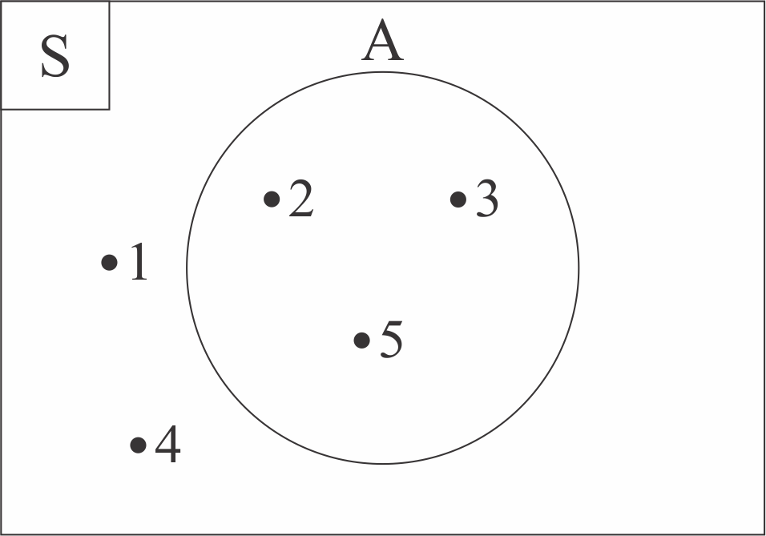

3.4 KOMPLEMEN HIMPUNAN

Cobalah jawab soal di bawah ini!
 Petunjuk (klik untuk menyembunyikan petunjuk)
Petunjuk (klik untuk menyembunyikan petunjuk)- Isilah kotak kosong dengan jawaban yang tepat.
- Setelah menjawab soal, tekan tombol "Cek Jawaban"
- Jika jawaban kamu benar, kotak akan berubah warna menjadi hijau dan akan muncul icon
 .
. - Jika jawaban kamu salah, kotak akan berubah warna menjadi merah, akan muncul icon
 , dan tombol "Ulang".
, dan tombol "Ulang". - Tekan tombol "Ulang" untuk mengulang menjawab soal.
- Untuk menyatakan komplemen himpunan, misal pada himpunan A, bisa menggunakan A' atau Ac
Diketahui S = {x | x ≤ 20, x ∈ bilangan asli}. Tentukanlah komplemen dari himpunan A jika A = {2, 4, 6, 8, 10, 12, 14, 16, 18, 20}!
Jawaban :
= {}
Jawaban :
= {}
Jawaban kamu benar.
Diketahui S = {1, 2, 3, ..., 20} dan A = {2, 4, 6, 8, 10, 12, 14, 16, 18, 20} maka A = {1, 3, 5, 7, 9, 11, 13, 15, 17, 19}
Jawaban kamu salah. Silahkan tekan tombol "Ulang".
Perhatikan diagram venn berikut

Berdasarkan diagram venn di atas, tentukanlah komplemen dari himpunan A!
Jawaban :
= {}
Jawaban :
= {}
Jawaban kamu benar. Diketahui S = {1, 2, 3, 4, 5} dan A = {2, 3, 5} maka A = {1, 4}
Jawaban kamu salah. Silahkan tekan tombol "Ulang".